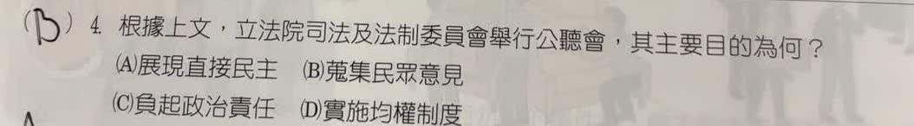

完整原題
作答所需文章／材料
【法庭直播規定三讀通過】 立法院院會三讀通過法院組織法部分條文修正案，明定法庭直播規範。修法採取分流原則：僅審查原判決適用法律是否有違背法令的法律審，以「原則公開，例外不公開」為原則；調查證據、認定案件事實的事實審則採「原則不公開，例外公開」。若案件涉及重大公共利益或屬社會矚目案件，法院得依當事人聲請或依職權裁定，以適當方式公開播送審理過程。修法前，立法院司法及法制委員會曾召開公聽會，廣泛蒐集各界意見，學者專家正反看法並陳。司法院副祕書長表示，經審慎評估後，尚難確認法庭直播的整體利益必然大於可能衍生的弊端，因此未貿然推動相關措施，強調此為審慎判斷，並非行政怠惰。公民第4題｜公聽會的主要目的
公民第5題｜法庭直播修法與權力制衡
先想一想，再查看答案、解說與原圖
公民第4題｜公聽會的主要目的
分享原卷｜第 4 題 · 首次出題日期 2026-10-24 · 原AI對話 ↗
逐項解析
| 選項與原句 | 判讀 | 句意與判斷理由 |
|---|---|---|
| (A) 展現直接民主 | 不選 | 公聽會讓各方表達意見，最後仍由立法院審議；不是人民直接投票決定政策。 |
| (B) 蒐集民眾意見 | 應選 | 文中明說廣泛蒐集各界意見、學者專家正反看法並陳，故選B。 |
| (C) 負起政治責任 | 不選 | 本段重點是修法前蒐集意見，不是辭職、改選等政治責任機制。 |
| (D) 實施均權制度 | 不選 | 均權制度處理中央與地方的權限劃分，本段未在討論此事。 |
詳細說明與解題步驟
抓住文章的直接線索：「廣泛蒐集各界意見，學者專家正反看法並陳」。公聽會讓政府人員、專家及相關民眾說明不同立場，供立法審查參考，因此選B。參與表達意見與直接決定法案不同，不能看到民眾參與就選直接民主。
① 從原文找目的
文中說公聽會要「廣泛蒐集各界意見」。讓不同立場的人說明看法，正是修法前蒐集意見的過程。
② 正反看法一起聽
學者專家提出支持與反對的理由，讓審議者比較可能的利弊。公聽會重在表達與聆聽，不是只找贊同的人。
③ 表達意見不等於表決通過
公聽會提供立法審查參考，最後仍由立法院審議。民眾能發言，不等於由人民直接投票決定法案。
④ 公聽會先聽各方意見
答案 B：蒐集民眾意見
- 關鍵：廣泛蒐集、正反看法並陳。
- A 的直接民主不是本題公聽會的決策方式。
- C 政治責任、D 中央地方權限，都不是本文重點。
核對註記：已核對題幹、全部選項與必要材料；教材對應課次未確認，歸綜合。
原圖（僅本題）


公民第5題｜法庭直播修法與權力制衡
分享原卷｜第 5 題 · 首次出題日期 2026-10-24 · 原AI對話 ↗
逐項解析
| 選項與原句 | 判讀 | 句意與判斷理由 |
|---|---|---|
| (A) 司法權制衡立法權 | 不選 | 本題的動作是立法院修法規範法院運作，並非法院審查法律是否違憲。 |
| (B) 立法權制衡行政權 | 不選 | 被規範的是法院審理與公開播送制度，不是行政院施政。 |
| (C) 司法權制衡行政權 | 不選 | 本題不是法院審查行政處分或行政機關違法。 |
| (D) 立法權制衡司法權 | 應選 | 立法院運用修法權，規範法院的審理公開制度，是題目要辨識的立法對司法的制衡。 |
詳細說明與解題步驟
一、先找誰在做事
原文說立法院院會三讀通過法院組織法部分條文修正案。立法院制定、修正法律，屬立法權。
二、再找法律規範的對象
修正內容是法庭審理的公開播送，涉及法院行使司法權時的程序。因此方向是立法權規範司法制度，選D。
三、把修法與個案審判分開
國會可以依法制定法院組織與訴訟程序的一般規則；這不表示立法委員可以指揮法官在某一件案件判誰勝敗。法官仍須依法獨立審判。
四、不要把反方向的制度混在一起
如果是法院審查法律是否違憲，才會涉及司法權對立法權的制衡。這題問的是修法這個動作，不是對該法律所提的違憲審查。
核對依據：憲法第63、80條；原題新聞作為閱讀材料保留，不把其中三讀時點的描述當作最新施行狀態。
https://law.moj.gov.tw/LawClass/LawSingle.aspx?pcode=A0000001&flno=63
https://law.moj.gov.tw/LawClass/LawSingle.aspx?pcode=A0000001&flno=80
① 做事的是立法院：立法權
文章的動作是「立法院三讀通過法律修正案」。立法院制定、修正法律，屬於立法權；別因材料出現法庭，就直接把動作者判成司法權。
② 規範的是法院審理：司法權
修正內容涉及法庭審理的公開播送制度，規範對象是法院行使司法權的程序。因此方向是立法權制衡司法權，選D，不是立法對行政。
③ 一般規則，不是指揮個案
立法院可依法制定法院組織及程序規則；法官仍須依法獨立審判。修法不等於立委可以要求某個案件判誰輸贏，也不是法院正在審查法律違憲。
④ 先看修法者，再看被規範的權力
答案 D：立法權制衡司法權
- 誰做事：立法院修法，辨認立法權。
- 規範誰：法院審理程序，辨認司法權。
- 法院審查法律是否違憲才是反方向，本題問修法行為。
核對註記：使用者確認OK：答案D，展示原來源後續訂正版AI圖，舊版B錯圖不採用。
原圖（僅本題）